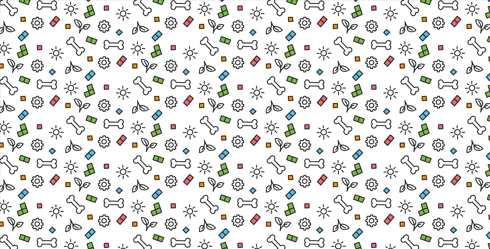
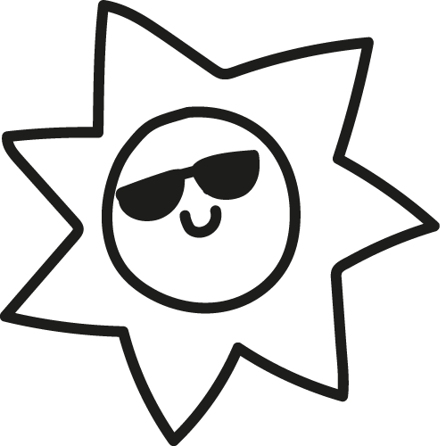
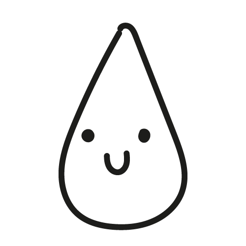
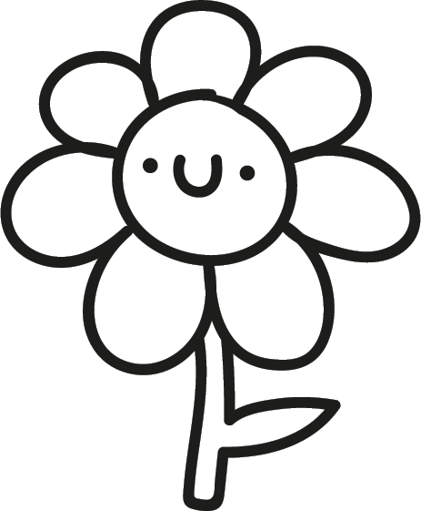
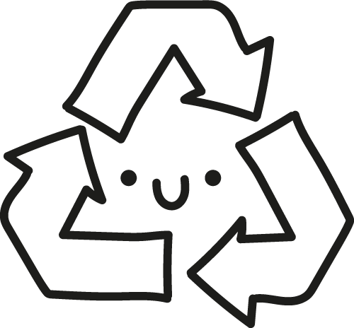

<!DOCTYPE html>
<html lang="es"></html><!-- el validator me ha dicho que lo ponga -->
<html>
<head>

<meta name="viewport" content="width=device-width, initial-scale=1.0">
<meta charset="utf-8">
<title>APOGEO 2050</title>

<!-- FAVICON -->
<link rel="icon" type="image/png" href="IMAGENES/favicon_16.png" sizes="16x16">
<link rel="icon" type="image/png" href="IMAGENES/favicon_32.png" sizes="32x32">
<link rel="icon" type="image/png" href="IMAGENES/favicon_64.png" sizes="64x64">

<!-- FONTS -->
<link rel="preconnect" href="https://fonts.googleapis.com">
<link rel="preconnect" href="https://fonts.gstatic.com" crossorigin>
<link href="https://fonts.googleapis.com/css2?family=Antonio:wght@100..700&display=swap" rel="stylesheet">
<link rel="preconnect" href="https://fonts.googleapis.com">
<link rel="preconnect" href="https://fonts.gstatic.com" crossorigin>
<link href="https://fonts.googleapis.com/css2?family=Antonio:wght@100..700&family=Roboto:ital,wght@0,100;0,300;0,400;0,500;0,700;0,900;1,100;1,300;1,400;1,500;1,700;1,900&display=swap" rel="stylesheet">

<link rel="stylesheet" type="text/css" href="CSS/estilo_textos.css">

<!-- menu responsive -->
<link rel="stylesheet" href="https://cdnjs.cloudflare.com/ajax/libs/font-awesome/4.7.0/css/font-awesome.min.css">
<link rel="stylesheet" type="text/css" href="CSS/css_menu_responsive.css">
<script src="JAVA_SCRIPT/menu_responsive.js"></script>


<style>


#patron_fondo {
    position: absolute;
    top: 0;
    left: 0;
    width: 100%;
    height: 100%;
    object-fit: cover;
    z-index: -1;

    background-image: url("IMAGENES/patron_fondo.jpg"); /* NO FUNSIONAAAA */
    background-size: cover; /* Para que la imagen cubra todo el cuerpo */
    background-position: center; /* Para centrar la imagen */
    background-repeat: repeat;

}

.container {
    background-image: url("IMAGENES/patron_fondo.jpg"); /* NO FUNSIONAAAA */
  
    background-position: center; /* Para centrar la imagen */
    background-repeat: repeat;
}
.row {
    position: relative;
    width: 100%;
    height: 100%;
    display: flex;
    justify-content: center;
    align-items: center;
    flex-direction: column; /* Cambio aquí */
}

.caja {
    background-color: rgb(255, 255, 255);
    text-align:center;
    padding: 20px;
    border-radius: 10px;
    width: 1550px;
    border: 3px solid black;
    margin: 20px; /* Espaciado entre las cajas */
    max-width: 90%; /* Añado esto para evitar que las cajas sean más anchas que la pantalla en dispositivos pequeños */
}

.container {
    display: flex;
    justify-content: center;
    margin-bottom: 20px;
}

.caja {
    width: 60%;
    background-color: #ffffff;
    padding: 50px;
    margin-right: 25px;
    box-sizing: border-box;
}

/* Media Query */
@media (max-width: 600px) {
    
    .container {
        flex-direction: column;
        align-items: center; /* Centrar los elementos en el eje vertical */
        
    }
   
    .caja {
    
        margin-right: 0;
        margin-bottom: 20px;
        flex-direction: column;
    }
 
}


/* Media Query para pantallas grandes */
@media (min-width: 1200px) {
    .container {
        flex-wrap: wrap;
        
    }
    .caja {
        width: 45%;
    }
}

.ilustraciones{
    height: 200px;
    padding: 20px;
    margin-bottom: 0;
}

</style>
</head>

<body>
<!-- barra navegación -->
<div class="topnav" id="myTopnav">
    <a href="_CROWCREW.html" class="logo-link">
        
    </a>
    <a href="index.html" class="active" id="Apogeo2050">APOGEO 2050</a>
    <a href="2REGLAMENTO.html" id="Reglamento">Reglamento</a>  
    <a href="3SERVICIOS.html" id="Servicios">Servicios</a>
    <a href="5CONTACTO.html" id="contacto">Contacto</a>
    <a href="_CROWCREW.html"index class="icon" onclick="myFunction()">
        <span class="fa fa-bars"></span><!-- elemento vacío que representa el menú hamburguesa -->
    </a>
</div>

<!-- patrón fondo -->


<!-- cajas -->
<div class="row container" style="margin-top:120px;">

    <div class="caja" style="background-color: rgb(161, 223, 231);">
        <h1>¿DÓNDE PUEDO ADQUIRIRLO?</h1>
        <p style="text-align: left;">Este juego ha nacido como un ejercicio de clase, sin embargo, es posible que se busque la forma
            de <strong> comercializarlo en el futuro</strong>. Para ello, tenemos un plan: La <strong>fabricación bajo demanda </strong>para evitar así que quede acumulado 
            en un almacén sin que nadie lo compre. Es por ello que desde que nos envíes tu solicitud hasta que recibas nuestro juego, 
            puede pasar algún tiempo. ¡Es porque lo estamos fabricando!
        
            Entre nuestros objetivos está lanzar inicialmente el juego en varios varios clubs de juegos de mesa y recreativos en Madrid.
            Allí, se te permitirá jugarlo y si estuvieras interesado, puedes solicitar tu propio juego allí mismo.
            ¡Acércate a jugarlo!</p>

        <p> Estos son los locales con los que tenemos pensado colaborar, aunque nos gustaría llegar a muchos sitios más:

            <ul style="text-align: left; padding-left: 50px;">
                <li><strong>3Meeples</strong> CC La rotonda, Pl. del Toro, Planta baja, 28760 Tres Cantos, Madrid</li>
                <li><strong>Six Board Game Café</strong> Av. de la Ciudad de Barcelona, 180, Retiro, 28007 Madrid</li>
                <li><strong>Replay Outlet boardgame Cafe</strong>  C/ de la Ribera de Curtidores, 26, Local 3, Centro, 28005 Madrid</li>
                <li><strong>Red Bar</strong>  C. de San Vicente Ferrer, 22, Centro, 28004 Madrid</li>
            </ul>
            
        </p>
        
    </div>

    <div class="caja" style="background-color: rgb(161, 231, 164);">
        <h1>MANTENIMIENTO Y REPARACIÓN</h1>
        <p style="text-align: left;"> Desde el equipo <strong>CROWCREW</strong> entendemos lo importante que es mantener tu juego en condiciones óptimas para que puedas disfrutar de la mejor experiencia de juego posible.
            Ofrecemos un servicio completo de mantenimiento para asegurarnos de que tu juego esté listo para jugar en cualquier momento.
            Nuestros servicios de mantenimiento incluyen:
            <ul style="text-align: left; padding-left: 50px;">
                <li><strong>Garantía inicial </strong>de un año: Cubrimos la reparación de cualquier daño o desgaste en el tablero, incluyendo superficies rayadas o agrietadas.</li>
                <li><strong>Asistencia técnica</strong> para resolver cualquier problema que puedas encontrar durante el juego. No dudes en <a href="5CONTACTO.html" style="text-decoration: none; color: brown;">contactarnos</a>. Estaremos encantadas de resolver vuestras dudas</li>
                <li> <strong>Reposición de tokens y cartas perdidas</strong> para que puedas reemplazar cualquier componente que falte en tu juego.
                    Tenemos acuerdos con más de 20 proveedores de juegos locales que respaldan la producción responsable, lo que te permite encontrar fácilmente los recambios para tu juego.
                    Si estás en Madrid, nuestra área operativa, contáctanos directamente y te facilitaremos la entrega de los componentes que necesitas.
                    ¡Estamos aquí para asegurarnos de que tu experiencia de juego sea completa y satisfactoria!
                </li>
            </ul>
        </p>
        
    </div>

    <div class="caja" style="background-color: rgb(236, 162, 101);">
        <h1>ACTUALIZACIONES</h1>
        <p style="text-align: left;">Nos comprometemos a ofrecerte la mejor experiencia de juego posible.
            Es por eso que continuamente trabajamos en mejorar y actualizar nuestro juego para ofrecerte nuevas características.
            Nuestros servicios de actualización incluyen
            <ul style="text-align: left; padding-left: 50px;">
                <li><strong>Actualizaciones periódicas</strong> de la baraja digital de eventos para mantener el juego fresco y emocionante</li>
                <li><strong> Personalización</strong> de nuevos retos para las cartas de evento, agregando más variedad y estrategia al juego.
                    ¿Tienes una idea para un nuevo evento? envíenosla y si consideramos que es viable, la incorporaremos a nuestra baraja digital.</li>
                <li><a href="3SERVICIOS.html" style="text-decoration: none;color:brown; ;"><strong>Modos de juego</strong></a> para  mantener el juego interesante y desafiante.</li>
                <li> <strong>Expansiones</strong> temáticas y con diversos grados de dificultad.</li>
            </ul>
        </p>
        
    </div>

    <div class="caja" style="background-color: rgb(231, 188, 188);">
        <h1>¿CÓMO RECICLO MI JUEGO?</h1>
        <p>APOGEO 2050 ha sido diseñado teniendo en cuenta consideraciones medioambientales. Nuestros componentes proceden de <strong>materiales reciclados</strong> o
            materias primas locales con <strong> certificados medioambientales y sociales</strong> como FSC y PEFC.
            Los elementos son fácilmente desensamblables para facilitar su reciclado, se han reducido los elementos de fijación al máximo
            y se han utilizado pegamentos en base de almidón <strong>orgánicos y biodegradables.</strong> 
            
            
            <p> Nos gusta alargar el ciclo de vida útil de nuestros juegos, si deseas desacerte del juego, puedes dejarlo en los
            puntos de recogida habilitados en los locales con los que colaboramos. Allí obtendrás un descuento del 20% en tu consumición en caso de ser un café bar o 
            en otro juego en caso de ser un local de juegos. Las piezas en buen estado se reincorporarán a un nuevo juego mientras que aquellos componentesdeteriorados
            se reciclarán formando parte de nuevos productos en el futuro.
            </p>
            

       
    </div>
</div>
</body>
</html>
